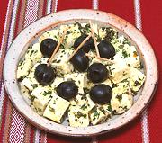

|
Panela Cheese, MarinatedMexico City - Queso Panela Marinado | ||||
| Serves: Effort: Sched: DoAhead: |
5 app ** 24+ hrs Must |
This very simple cheese appetizer is popular in Mexico City. Naturally, being the diplomatic center of the country, there are many parties requiring appetizers. | |||
|
10 ---- 2 1 1 1/2 2/3 1/4 ---- 12 |
oz --- t t t T t c --- |
Queso Panela (1) -- Seasonings Oregano, dry (2) Cilantro Pequin Chili (3) Rosemary, fresh Sea Salt Olive Oil, ExtV -- Garnish Black Olives (4) |
Make - (25+ hrs - 15 min work)
|